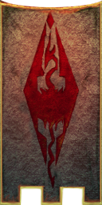
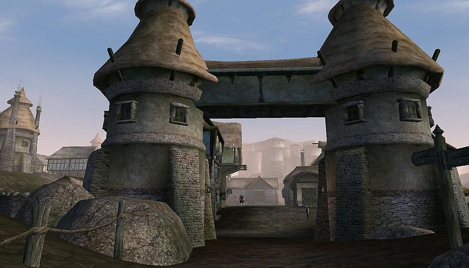
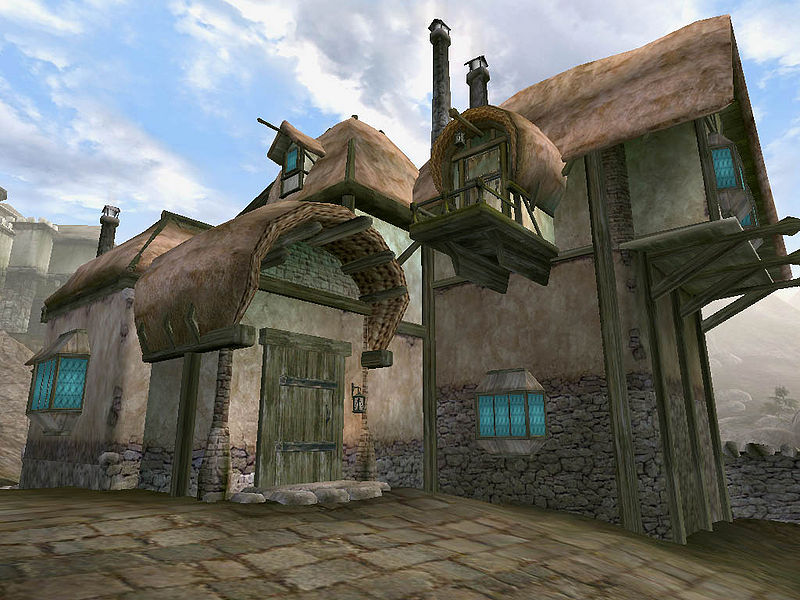

Morrowind:Caldera
Morrowind: Places
| Caldera |
| Alignment: Imperial |
| Region: West Gash |
|
Transport:
Almsivi Intervention:
Divine Intervention:
Guild Guide:
|
Services:
|
|  |
|  Southern City Gates of Caldera |
 The Governor's Hall |
|  Ghorak Manor |
Caldera is an Imperial charter town just north of Balmora. It was built to service the nearby Ebony mine, providing the miners with homes, entertainment, and other services. The town is ruled largely from the Caldera Mining Company's fortress to the southwest. The buildings, which have Imperial and Nordic architectural influences, form an inverse "L" shape between two large guard towers. While Dunmer presence in Caldera is almost non-existent, a large contingent of Orcs live in the dilapidated Ghorak Manor (along with a rather unusual Scamp). Notable institutions in Caldera include a Mages Guild branch, two general merchants, a blacksmith, a tavern, and one of the few Imperial-style clothiers in Vvardenfell.
Governor's Hall
Located to the north on a hill overlooking Caldera, the Governor's Hall is the residence of a corrupt House Hlaalu quest giver, Odral Helvi. You find several Hlaalu trainers here as well as Foves Arenim selling thieves tools. Llaros Uvayn sells some interesting spells.
Main Street
Ghorak Manor houses Creeper and Duma gro-Lag, a sculptor that can help you in a quest for Boethiah. The Mages Guild offers Enchanting and Emelia Duronia is the guild guide here. Surane Leoriane offers some training to other Blades and has a bed you can sleep in, behind a locked (30) door. The local inn, Shenk's Shovel, offers sundries and beds. The smith Hodlismod in the alley by Ghorak Manor sells quality weapons and armor, especially if you have the official Adamantium Armor plugin. The pawnbroker Irgola has a Shadowweave Ring and the Hlormaren Propylon Index for sale. The trader Verick Gemain offers some useful enchanted items for the budding adventurer.
People
Ri'Shajirr is a master trainer in Sneak, located upstairs in Shenk's Shovel. Governor Odral Helvi is a quest giver for House Hlaalu. The mine boss Stlennius Vibato lives in the Caldera Mining Company building at the ebony mine.
Getting There and Around
Apart from the guild guide, there is no fast travel from Caldera. Good roads lead south to Balmora and north to Ald'ruhn, which are fairly close by. The north road has a minor path leading around the mountains to the Caldera Mine and a Y-split, with a minor road leading west to Gnaar Mok on the Bitter Coast. The Foyada Mamaea is east of town, leading to Ghostgate and Red Mountain.